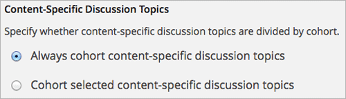
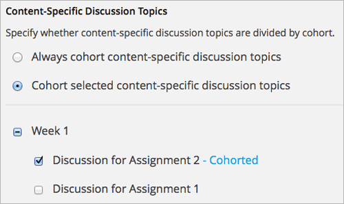

在开启了队列的课程中，讨论主题可以按队列分类或统一对所有学生可见。 按队列分类的讨论主题对所有学生可见，但是帖子、回复和评论仅对队列成员可见。 统一讨论主题中的帖子、回复和评论对所有学生可见。
当您第一次在课程中开启队列时， course-wide discussion topics 的初始设定和 content-specific discussion topics 的设定不同。
默认状态下，全课堂讨论主题是统一的，因为这些讨论一般是为课程中的所有学生都感兴趣的内容设置的。 相反，内容指定讨论主题是默认按队列分配的。在导师面板中，您可以更改讨论主题的类型。
Warning
如果您在学生开始阅览和贡献讨论帖时，更改在线课程中讨论主题的队列设置， 您将更改学生的课程体验。学生可能看到之前看不到的帖子，或者看不到以前能看到的帖子。 如果您更改任何已开始课程的设置，请注意改变可能造成的影响。更多细节请参阅 Altering Cohort Configuration in a Running Course 。
关于讨论主题的队列设置，请参考以下主题。
关于课程论坛的概览请参阅 管理课程讨论项目. 关于使用队列和管理按队列分类讨论的信息请参考 使用队列功能建立课程群 and 管理有学生队列的论坛.
Note
本章和以下主题中描述的按队列分类讨论主题，只能将讨论主题中的帖子进行分类， 讨论主题本身还是对所有学生可见。如果您想设置指定内容讨论主题尽对特定队列可见， 您可以使用内容小组并更改讨论组件的可见性设置。具体细节请参阅 创建特定队列课件.
当您第一次 create a course-wide discussion topic 时，该主题是统一的，课程内的所有学生都可以发帖、 阅览帖子、回复和评论。
在您添加了全课堂主题后，您可以使其按队列分类。 设定全课堂讨论主题属性的相关内容请参考 指定全课堂讨论主题是否按队列分类.
全课堂讨论主题是默认为统一属性，所以所有学生都能参与讨论。 某些情况下，您可能决定按队列分类全课堂讨论主题， 这样每个队列中的成员只能看到同队列中成员的回复和发帖。
例如，除系统自带“一般性说明”主题之外，您添加了三个新的全课堂讨论主题，一共为四个主题。
您在一般性说明和课程Q&A主题中，以及其他您希望学生探索的课题中发布的帖子适用于所有学生。 但是您决定将声明和头脑风暴按队列分类。关于指定全课程讨论主题是否按队列分类的信息， 请参考 指定全课堂讨论主题是否按队列分类.
您也可以使用命名对话，学生在发帖前可以了解该讨论主题的受众。 更多关于命名对话的信息请参考 为讨论课题应用命名约定.
当您 create course-wide discussion topics 时， 主题默认为统一属性，所有学生都能看见并回复其他学生的帖子。 您可以更改全课堂讨论主题设置，将其按队列分类，这样学生只能看到相同队列中成员的回复和发帖。
按照以下步骤更改全课堂讨论主题的队列设置。
在学习管理系统中选择 导师 ，选择 队列 。
点击 指定讨论主题是否按队列分类 。
在 全课程讨论主题 一节，勾选您想划分的主题。
点击 保存 。
全课堂讨论主题列表更新。
更多关于管理按队列分类的讨论主题请参考 管理有学生队列的论坛.
当您开启了队列，并通过在Studio单元中添加讨论组件 create content-specific discussion topics 后， 这些指定内容讨论主题默认按队列分类。 学生只能看到本队列成员发布的帖子、回复以及评论。
如果您想让所有指定内容讨论主题按队列分类，您不需要做任何操作。 更多信息请参考 设置所有指定内容讨论主题按队列分类.
您也可以选择指定大多数指定内容讨论主题为统一属性，然后设置 only a few discussion topics divided by cohort.
当您第一次 add them 时，指定内容讨论主题的默认设置是按队列分类的。 如果您想让所有指定内容讨论主题按队列分类，您不需要进行任何操作。
您可以在导师面板的 队列 标签中确认此设置。
在 指定内容讨论主题 一节中，您可以看到 总是按队列划分指定内容讨论主题 已选定。
所有的指定内容讨论主题都是按队列划分的，您不需要单独更改此项设置。
更多关于更改队列设置，使大多数指定内容讨论为统一属性的信息请参考 设置部分指定内容讨论主题按队列分类.
当您第一次 add them 时，指定内容讨论主题的默认设置为按队列分类。
如果需要将少数指定内容讨论主题按队列分类，您可以更改指定内容讨论主题的队列设置， 使其为统一属性，然后选择您想划分的主题。
Warning
当您将队列设置由 总是按队列划分指定内容讨论主题 更改为 选择性划分指定内容讨论主题 时， 您将把所有指定内容讨论主题设定为统一属性，除非您明确将其更改为按队列划分。 这表示任何之前按队列划分的帖子、回复和评论现在对所有学生可见。
如果您在已开始的课程中更改队列设置，注意更改可能造成的影响。 更多细节请参阅 Altering Cohort Configuration in a Running Course.
按照以下步骤指定仅部分指定内容讨论主题按队列分类。
在 指定内容讨论主题 中，如果未被选中，选择 选择性划分指定内容讨论主题 。
Warning
如果您更改已开始课程的设置，请注意可能造成的影响。 细节请参阅 Altering Cohort Configuration in a Running Course.
所有您添加的指定内容讨论主题对所有学生可见。 主题列表变得可编辑。
选中您想划分的指定内容讨论主题。
点击 保存 。
您做出的修改已保存。
更多关于管理按队列分类讨论的信息请参阅 管理有学生队列的论坛.